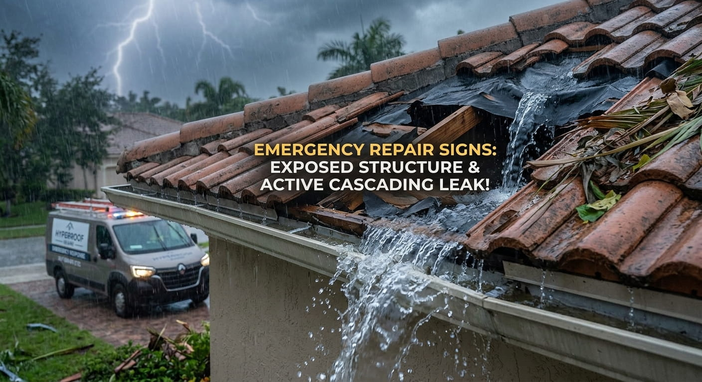

How Long Does a Roof Last in Miami?
There is no single lifespan that applies to every Miami roof. The useful question is not only how old the roof is, but how it has been installed, what material it uses, how much weather exposure it receives, whether it has been maintained and what condition the roofing system is in today.
Miami's environment makes that distinction important. Heat, ultraviolet exposure, heavy rainfall, humidity and tropical storms can all influence how roofing materials perform over time.
Roof material is only one part of the answer
Different roofing materials have different characteristics and installation requirements. Asphalt shingles, concrete or clay tile, metal and low-slope membrane systems should not be judged by the same simple lifespan number.
Even within one material category, product quality, installation details and maintenance can make a meaningful difference. This is why homeowners should be cautious about promises that a particular roof will last an exact number of years.
If you are comparing materials for a replacement project, read our guide to tile versus shingle roofing in Miami.
Miami weather creates continuous exposure
The roof is the part of the building that takes the direct impact of sun and rain. UV exposure and heat can gradually affect roofing materials, while heavy rainfall tests flashing and drainage. Tropical storms add wind and wind-driven rain to the equation.
Florida's Hurricane Retrofit Guide describes the roof as a system that must resist wind and water and recommends evaluating the roof covering along with the underlying structure. Read the official Florida roof guidance.
Installation quality matters more than homeowners often realize
A durable material cannot compensate for poor installation. Fastening, flashing, underlayment, drainage and manufacturer requirements all contribute to how a roof performs. In high-wind areas, installation details can become particularly important.
When replacing a roof, ask the contractor what installation system is being proposed and how it addresses local requirements. Miami-Dade County publishes roofing permit and product-control information that homeowners can use to understand the regulatory environment.
Maintenance can extend useful service
Maintenance does not make a roof last forever, but it can help problems get noticed before they become larger failures. Keeping drainage paths clear, addressing visible damage and investigating recurring leaks can reduce the chance that a small problem remains unresolved for years.
Routine maintenance is also about knowing when a roof has moved beyond maintenance. If repairs become frequent or problems appear in several locations, a broader inspection may be more useful than another isolated patch.
Storms can change the roof's condition overnight
A roof that appears healthy before a storm can have new damage afterward. Wind can displace materials, debris can puncture surfaces, and wind-driven rain can enter around weak points. After significant weather, a professional inspection can establish a new baseline for the roof.
Our Florida roof inspection frequency guide explains why post-storm evaluations are worth considering.
Age is a clue, not a diagnosis
Homeowners sometimes treat a roof's age as a replacement deadline. In reality, age should trigger more attention, not an automatic decision. A roof with good maintenance and limited deterioration may perform differently from a roof of the same age that has experienced repeated leaks and repairs.
Our guide on how to know if you need a new roof looks at condition-based warning signs. A professional roof inspection can then put those signs into context.
What homeowners should track
Keep records of major repairs, storm damage, inspections and replacement work. Knowing when the roof was installed, which material was used and what repairs have already been made can make future decisions easier. It also gives a contractor better context when evaluating the property.
When should you stop repairing and consider replacement?
The answer depends on the pattern rather than one defect. If a repair addresses an isolated problem on an otherwise sound roof, it may be reasonable. If leaks recur in different locations, materials are deteriorating broadly, or the roof has suffered significant damage, replacement may provide a more coherent long-term solution.
For project planning, read our Miami roof replacement cost guide and our roof replacement service page.
Frequently asked questions
Does a Miami roof have a shorter life because of the climate?
Climate exposure is one factor that can affect performance, but material, installation, maintenance and storm history also matter.
Should I replace a roof just because it is old?
Not automatically. Age is a reason to inspect the roof more carefully, not proof that replacement is required.
Can maintenance prevent storm damage?
Maintenance cannot eliminate hurricane risk, but identifying deterioration and addressing known weaknesses can improve the roof's condition before severe weather.
Sources and further reading
- Florida Hurricane Retrofit Guide — Roofs
- Florida Hurricane Retrofit Guide — Re-Roofing
- Miami-Dade County — Roofing Permits
Related Miami roofing guides
Miami roof inspection · Roof replacement cost · Hurricane roof damage · More roofing advice